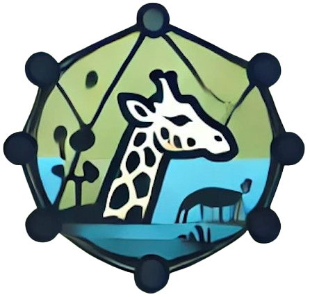

Ryu Topology
Day mode
Night mode
SLICES:
Store management
Web Access
Wi-Fi Access
Administrative Core
Admininistration Store Sync
Admininistration Wi-Fi Control
Admininistration Security
Admininistration Animal Data
Animal management
Security Monitoring
RESET
QoS:
SET_QOS
GET_QOS
DELETE_QOS
SET_QUEUE
GET_QUEUE
QoS Configuration Panel
Select Switch:
QoS Rules
priority
in_port
eth_type
nw_dst
ip_proto
tp_dst
queue_id
Add QoS Rule
priority:
in_port:
eth_type:
IPv4
IPv6
nw_dst:
ip_proto:
TCP
UDP
tp_dst:
queue_id:
Set Rule